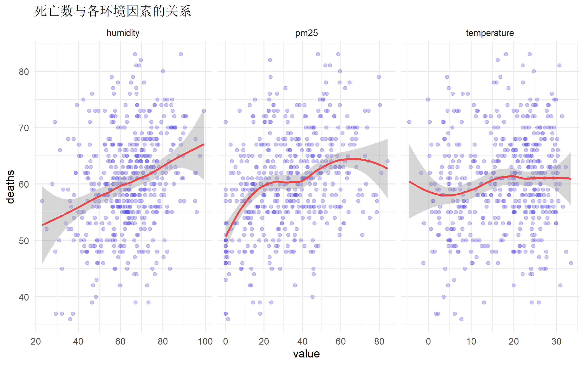
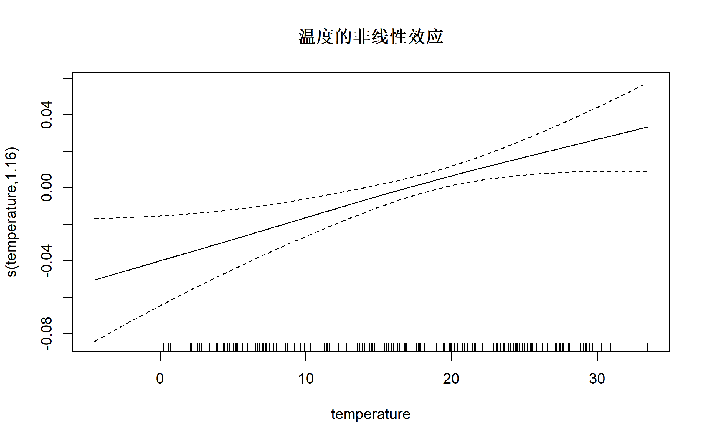
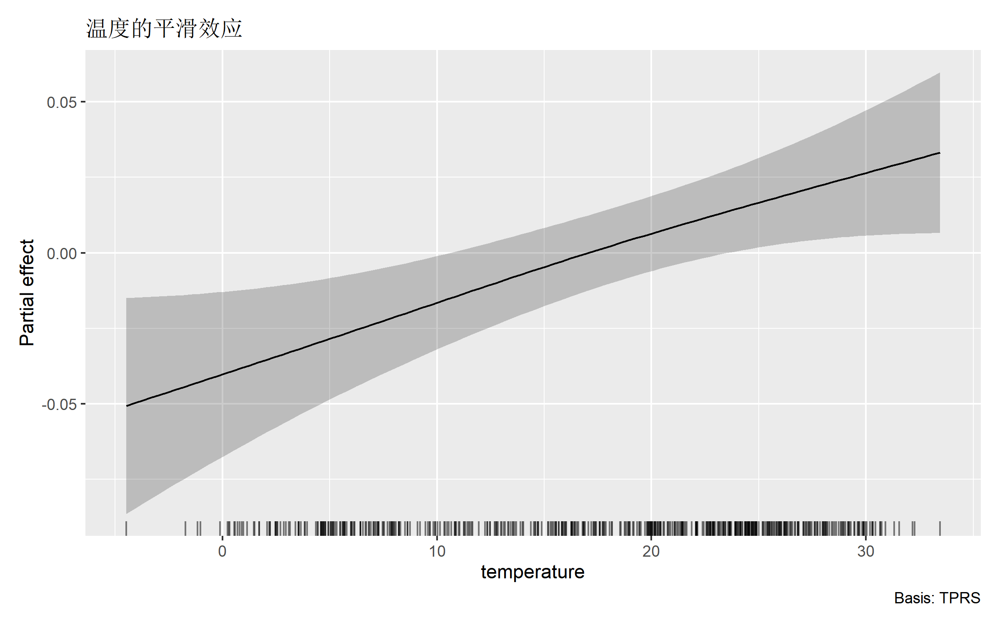
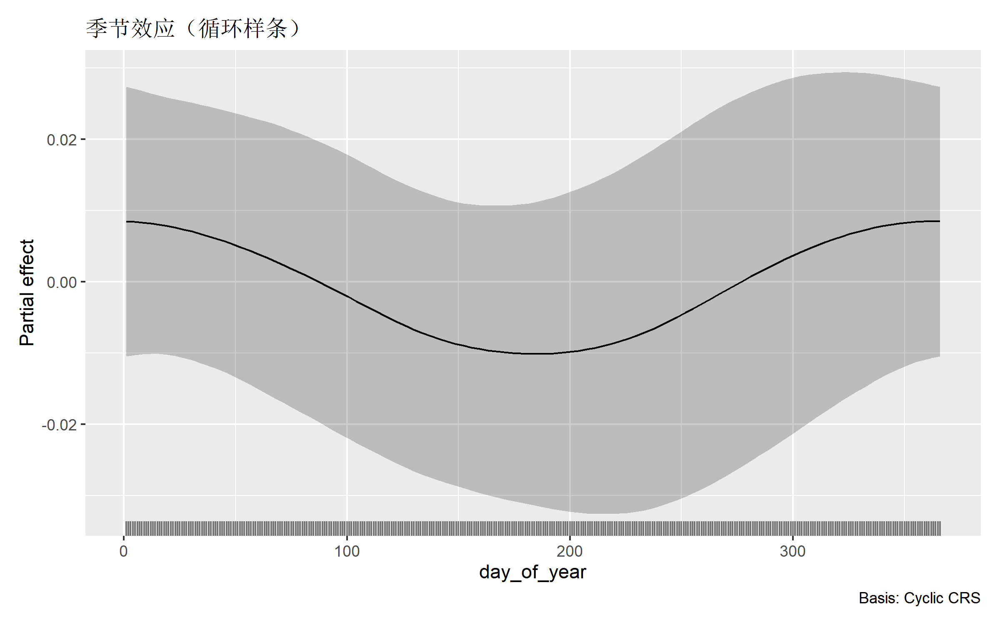
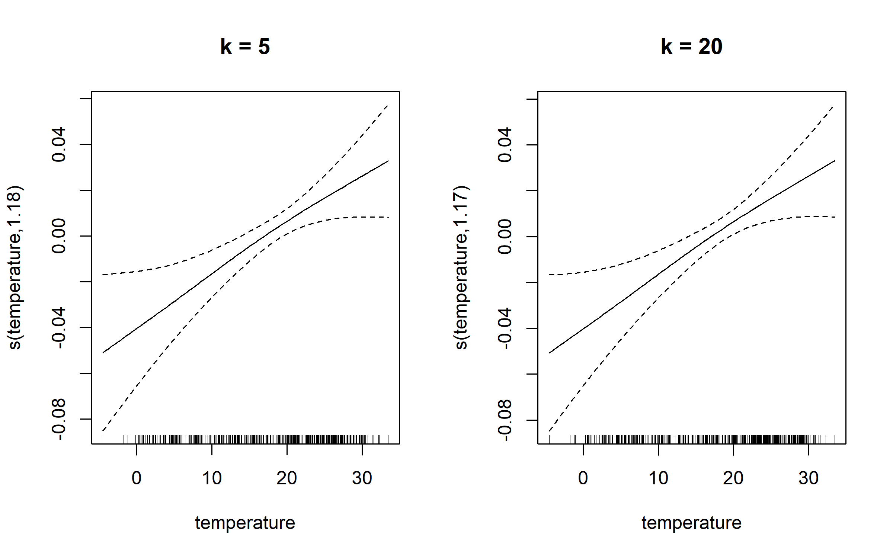
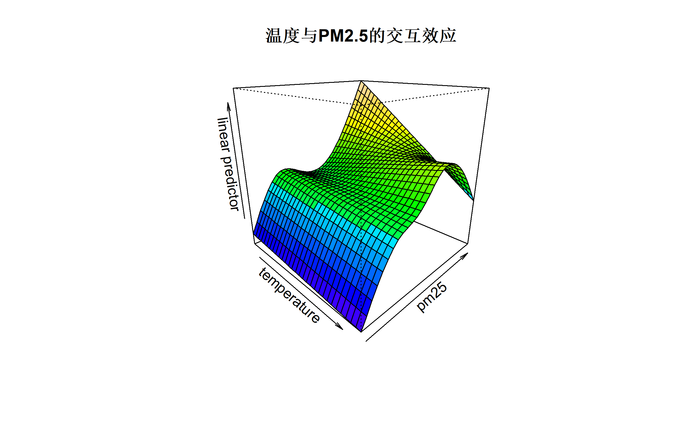
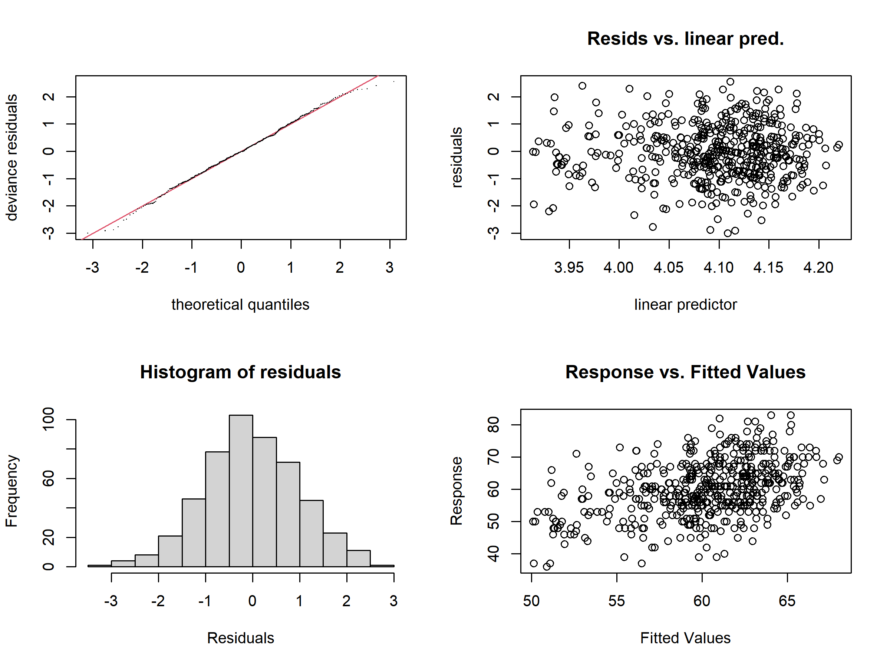
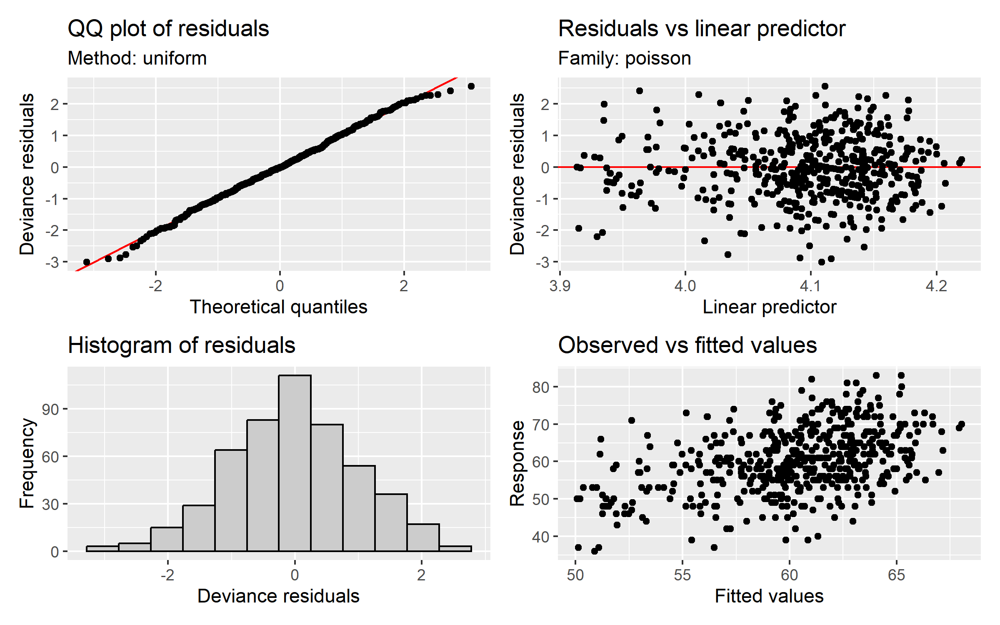
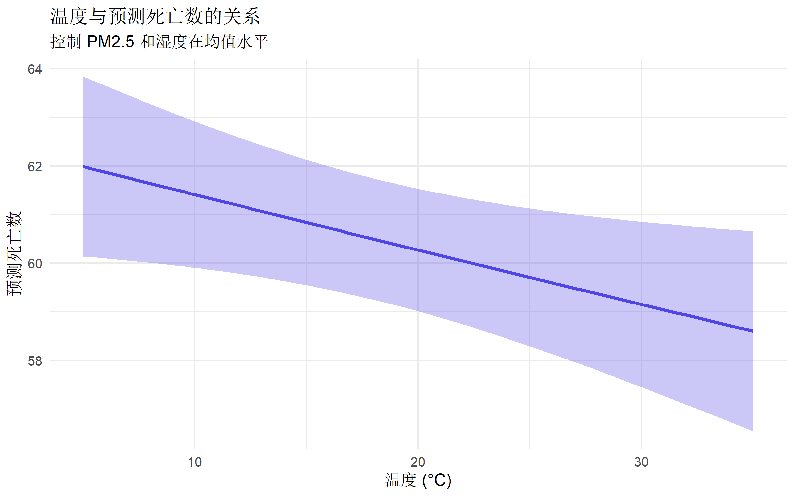
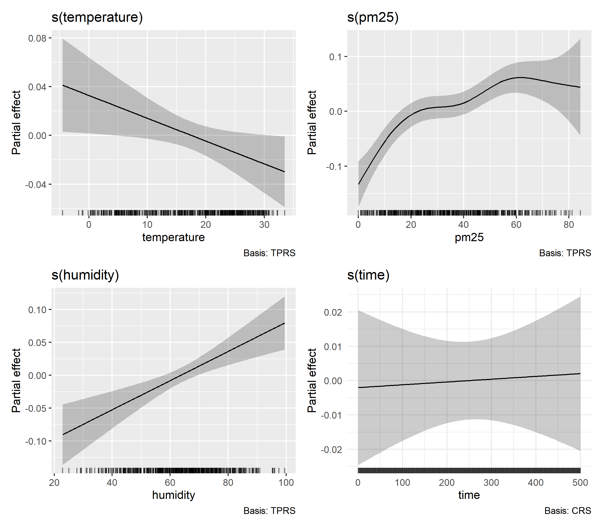

# 核心包
library(mgcv) # GAM 主力包
library(gratia) # GAM 可视化
library(tidyverse) # 数据处理
library(broom) # 模型整理广义加性模型 (GAM) 完全指南
R语言方法
统计建模
GAM
什么是广义加性模型？
广义加性模型（Generalized Additive Model, GAM） 是一种灵活的半参数回归方法，允许预测变量对结局变量产生非线性影响。
与传统模型的对比
| 模型 | 公式 | 特点 |
|---|---|---|
| 线性回归 | \(Y = \beta_0 + \beta_1 X\) | 严格线性关系 |
| 多项式回归 | \(Y = \beta_0 + \beta_1 X + \beta_2 X^2\) | 全局多项式 |
| GAM | \(Y = \beta_0 + f(X)\) | 数据驱动的灵活曲线 |
核心公式
\[g(E[Y]) = \beta_0 + f_1(X_1) + f_2(X_2) + \cdots + f_p(X_p)\]
其中： - \(g(\cdot)\) 是连接函数 - \(f_i(\cdot)\) 是平滑函数（通常是样条函数）
适用场景
| 场景 | 示例 |
|---|---|
| 非线性关系 | 年龄与疾病风险的 U 型关系 |
| 环境流行病学 | 气温与死亡率的非线性关联 |
| 时间趋势 | 季节性波动的长期趋势 |
| 剂量-反应 | 药物剂量与疗效的非线性曲线 |
R 包安装与加载
数据准备
使用模拟数据：空气污染与健康效应
# 模拟数据
set.seed(2024)
n <- 500
health_data <- tibble(
date = seq.Date(
from = as.Date("2020-01-01"),
by = "day", length.out = n
),
# 环境变量
temperature = 15 + 12 * sin(2 * pi * (1:n) / 365) + rnorm(n, 0, 3),
pm25 = pmax(0, 30 + 20 * sin(2 * pi * (1:n) / 365 + 1) + rnorm(n, 0, 15)),
humidity = pmin(100, pmax(20, 60 + 15 * sin(2 * pi * (1:n) / 365 + 0.5) + rnorm(n, 0, 10)))
) |>
mutate(
# 非线性效应：U型温度-死亡关系
temp_effect = 0.5 * (temperature - 20)^2 / 100,
# PM2.5 效应（对数形式）
pm_effect = 3 * log(pm25 + 1),
# 总死亡数（Poisson）
baseline = 50,
deaths = rpois(n, lambda = baseline + temp_effect + pm_effect +
0.1 * (humidity - 60))
)
# 添加时间变量
health_data <- health_data |>
mutate(
day_of_year = yday(date),
month = month(date),
year = year(date),
time = row_number()
)
glimpse(health_data)Rows: 500
Columns: 12
$ date <date> 2020-01-01, 2020-01-02, 2020-01-03, 2020-01-04, 2020-01-0…
$ temperature <dbl> 18.152469, 16.819204, 15.295522, 15.186995, 19.505873, 20.…
$ pm25 <dbl> 58.64173, 36.22359, 59.35035, 47.77105, 81.19869, 35.43337…
$ humidity <dbl> 66.89995, 62.64636, 58.83599, 64.36041, 66.41205, 61.14408…
$ temp_effect <dbl> 1.706686e-02, 5.058730e-02, 1.106606e-01, 1.158251e-01, 1.…
$ pm_effect <dbl> 12.265066, 10.850828, 12.300500, 11.661411, 13.227418, 10.…
$ baseline <dbl> 50, 50, 50, 50, 50, 50, 50, 50, 50, 50, 50, 50, 50, 50, 50…
$ deaths <int> 83, 59, 78, 64, 62, 48, 56, 64, 49, 71, 62, 58, 56, 77, 56…
$ day_of_year <dbl> 1, 2, 3, 4, 5, 6, 7, 8, 9, 10, 11, 12, 13, 14, 15, 16, 17,…
$ month <dbl> 1, 1, 1, 1, 1, 1, 1, 1, 1, 1, 1, 1, 1, 1, 1, 1, 1, 1, 1, 1…
$ year <dbl> 2020, 2020, 2020, 2020, 2020, 2020, 2020, 2020, 2020, 2020…
$ time <int> 1, 2, 3, 4, 5, 6, 7, 8, 9, 10, 11, 12, 13, 14, 15, 16, 17,…探索性分析
# 查看非线性关系
health_data |>
select(deaths, temperature, pm25, humidity) |>
pivot_longer(-deaths, names_to = "variable", values_to = "value") |>
ggplot(aes(x = value, y = deaths)) +
geom_point(alpha = 0.3, color = "#4f46e5") +
geom_smooth(method = "loess", color = "#ef4444") +
facet_wrap(~variable, scales = "free_x") +
labs(title = "死亡数与各环境因素的关系") +
theme_minimal(base_size = 11)
基础 GAM 模型
单变量平滑
# 基础 GAM：温度的非线性效应
gam1 <- gam(deaths ~ s(temperature),
data = health_data,
family = poisson
)
summary(gam1)
Family: poisson
Link function: log
Formula:
deaths ~ s(temperature)
Parametric coefficients:
Estimate Std. Error z value Pr(>|z|)
(Intercept) 4.096982 0.005766 710.5 <2e-16 ***
---
Signif. codes: 0 '***' 0.001 '**' 0.01 '*' 0.05 '.' 0.1 ' ' 1
Approximate significance of smooth terms:
edf Ref.df Chi.sq p-value
s(temperature) 1.156 1.296 12.29 0.00163 **
---
Signif. codes: 0 '***' 0.001 '**' 0.01 '*' 0.05 '.' 0.1 ' ' 1
R-sq.(adj) = 0.0167 Deviance explained = 1.89%
UBRE = 0.23926 Scale est. = 1 n = 500解读输出
- edf (有效自由度)：衡量曲线的复杂度，edf ≈ 1 表示近似线性
- p 值：检验平滑项是否显著
- GCV/UBRE：用于选择平滑度的交叉验证分数
# 可视化平滑效应
plot(gam1,
shade = TRUE, shade.col = "#4f46e565",
main = "温度的非线性效应"
)
使用 gratia 可视化（推荐）
# 使用 gratia 包绑制更美观的图
draw(gam1) +
labs(title = "温度的平滑效应")
多变量 GAM
# 多变量模型
gam_full <- gam(
deaths ~ s(temperature) + s(pm25) + s(humidity) + s(time, bs = "cr"),
data = health_data,
family = poisson,
method = "REML" # 推荐的平滑度选择方法
)
summary(gam_full)
Family: poisson
Link function: log
Formula:
deaths ~ s(temperature) + s(pm25) + s(humidity) + s(time, bs = "cr")
Parametric coefficients:
Estimate Std. Error z value Pr(>|z|)
(Intercept) 4.095210 0.005777 708.9 <2e-16 ***
---
Signif. codes: 0 '***' 0.001 '**' 0.01 '*' 0.05 '.' 0.1 ' ' 1
Approximate significance of smooth terms:
edf Ref.df Chi.sq p-value
s(temperature) 1.000 1.000 4.853 0.0276 *
s(pm25) 4.161 5.143 60.140 < 2e-16 ***
s(humidity) 1.000 1.001 15.966 6.46e-05 ***
s(time) 1.001 1.002 0.042 0.8395
---
Signif. codes: 0 '***' 0.001 '**' 0.01 '*' 0.05 '.' 0.1 ' ' 1
R-sq.(adj) = 0.182 Deviance explained = 19.5%
-REML = 1758.9 Scale est. = 1 n = 500# 所有平滑项的可视化
draw(gam_full, residuals = TRUE)
样条类型
mgcv 提供多种样条基函数：
| 参数 | 类型 | 适用场景 |
|---|---|---|
bs = "tp" |
薄板样条（默认） | 通用，自动选择复杂度 |
bs = "cr" |
三次回归样条 | 计算效率高 |
bs = "cc" |
循环样条 | 周期性数据（如季节） |
bs = "ps" |
P 样条 | 惩罚样条 |
bs = "re" |
随机效应 | 分类变量的随机效应 |
周期性样条
# 使用循环样条处理季节性
gam_seasonal <- gam(
deaths ~ s(day_of_year, bs = "cc", k = 12) + # 季节性（循环）
s(temperature) +
s(pm25),
data = health_data,
family = poisson,
method = "REML"
)
summary(gam_seasonal)
Family: poisson
Link function: log
Formula:
deaths ~ s(day_of_year, bs = "cc", k = 12) + s(temperature) +
s(pm25)
Parametric coefficients:
Estimate Std. Error z value Pr(>|z|)
(Intercept) 4.095448 0.005775 709.1 <2e-16 ***
---
Signif. codes: 0 '***' 0.001 '**' 0.01 '*' 0.05 '.' 0.1 ' ' 1
Approximate significance of smooth terms:
edf Ref.df Chi.sq p-value
s(day_of_year) 0.847 10.000 1.551 0.128
s(temperature) 1.002 1.003 0.029 0.869
s(pm25) 4.555 5.598 62.775 <2e-16 ***
---
Signif. codes: 0 '***' 0.001 '**' 0.01 '*' 0.05 '.' 0.1 ' ' 1
R-sq.(adj) = 0.163 Deviance explained = 17.6%
-REML = 1759.7 Scale est. = 1 n = 500# 可视化季节效应
draw(gam_seasonal, select = 1) +
labs(title = "季节效应（循环样条）")
控制平滑度
节点数 (k)
# k 控制最大复杂度
gam_k5 <- gam(deaths ~ s(temperature, k = 5), data = health_data, family = poisson)
gam_k20 <- gam(deaths ~ s(temperature, k = 20), data = health_data, family = poisson)
# 比较
par(mfrow = c(1, 2))
plot(gam_k5, main = "k = 5")
plot(gam_k20, main = "k = 20")
par(mfrow = c(1, 1))检验 k 是否足够
# k 检验
k.check(gam_full) k' edf k-index p-value
s(temperature) 9 1.000178 0.9168486 0.0325
s(pm25) 9 4.160586 0.9495498 0.1325
s(humidity) 9 1.000394 1.0194301 0.6500
s(time) 9 1.000861 1.0466397 0.8600# p 值很小表示 k 可能不够固定自由度
# 使用 fx = TRUE 固定自由度
gam_fixed <- gam(
deaths ~ s(temperature, k = 5, fx = TRUE), # 固定 4 df
data = health_data,
family = poisson
)交互效应
张量积平滑
# 温度和 PM2.5 的交互效应
gam_interact <- gam(
deaths ~ te(temperature, pm25), # 张量积交互
data = health_data,
family = poisson,
method = "REML"
)
summary(gam_interact)
Family: poisson
Link function: log
Formula:
deaths ~ te(temperature, pm25)
Parametric coefficients:
Estimate Std. Error z value Pr(>|z|)
(Intercept) 4.095414 0.005775 709.1 <2e-16 ***
---
Signif. codes: 0 '***' 0.001 '**' 0.01 '*' 0.05 '.' 0.1 ' ' 1
Approximate significance of smooth terms:
edf Ref.df Chi.sq p-value
te(temperature,pm25) 7.438 8.319 106.5 <2e-16 ***
---
Signif. codes: 0 '***' 0.001 '**' 0.01 '*' 0.05 '.' 0.1 ' ' 1
R-sq.(adj) = 0.165 Deviance explained = 18%
-REML = 1757.2 Scale est. = 1 n = 500# 3D 可视化
vis.gam(gam_interact,
view = c("temperature", "pm25"),
theta = 45, phi = 20,
main = "温度与PM2.5的交互效应",
color = "topo"
)
# 等高线图
vis.gam(gam_interact,
view = c("temperature", "pm25"),
plot.type = "contour",
main = "等高线图：温度 × PM2.5"
)
使用 ti() 分离主效应和交互
# 分离主效应和纯交互
gam_ti <- gam(
deaths ~ s(temperature) + s(pm25) + ti(temperature, pm25),
data = health_data,
family = poisson,
method = "REML"
)
summary(gam_ti)
Family: poisson
Link function: log
Formula:
deaths ~ s(temperature) + s(pm25) + ti(temperature, pm25)
Parametric coefficients:
Estimate Std. Error z value Pr(>|z|)
(Intercept) 4.093176 0.006266 653.3 <2e-16 ***
---
Signif. codes: 0 '***' 0.001 '**' 0.01 '*' 0.05 '.' 0.1 ' ' 1
Approximate significance of smooth terms:
edf Ref.df Chi.sq p-value
s(temperature) 1.002 1.004 0.039 0.847
s(pm25) 4.474 5.508 79.823 <2e-16 ***
ti(temperature,pm25) 3.453 4.895 4.600 0.531
---
Signif. codes: 0 '***' 0.001 '**' 0.01 '*' 0.05 '.' 0.1 ' ' 1
R-sq.(adj) = 0.166 Deviance explained = 18.3%
-REML = 1761.1 Scale est. = 1 n = 500线性项与平滑项混合
# 部分变量使用线性效应
gam_mixed <- gam(
deaths ~ humidity + # 线性效应
s(temperature) + # 平滑效应
s(pm25, k = 8) +
s(time, bs = "cr"),
data = health_data,
family = poisson,
method = "REML"
)
summary(gam_mixed)
Family: poisson
Link function: log
Formula:
deaths ~ humidity + s(temperature) + s(pm25, k = 8) + s(time,
bs = "cr")
Parametric coefficients:
Estimate Std. Error z value Pr(>|z|)
(Intercept) 3.9541043 0.0359491 109.992 < 2e-16 ***
humidity 0.0022191 0.0005559 3.992 6.55e-05 ***
---
Signif. codes: 0 '***' 0.001 '**' 0.01 '*' 0.05 '.' 0.1 ' ' 1
Approximate significance of smooth terms:
edf Ref.df Chi.sq p-value
s(temperature) 1.000 1.000 4.842 0.0278 *
s(pm25) 4.102 4.990 60.228 <2e-16 ***
s(time) 1.001 1.002 0.043 0.8382
---
Signif. codes: 0 '***' 0.001 '**' 0.01 '*' 0.05 '.' 0.1 ' ' 1
R-sq.(adj) = 0.182 Deviance explained = 19.5%
-REML = 1761.5 Scale est. = 1 n = 500模型诊断
残差检查
# 使用 gam.check
gam.check(gam_full)
Method: REML Optimizer: outer newton
full convergence after 8 iterations.
Gradient range [-0.0003035987,-1.600375e-05]
(score 1758.905 & scale 1).
Hessian positive definite, eigenvalue range [7.733389e-05,0.8189276].
Model rank = 37 / 37
Basis dimension (k) checking results. Low p-value (k-index<1) may
indicate that k is too low, especially if edf is close to k'.
k' edf k-index p-value
s(temperature) 9.00 1.00 0.92 0.035 *
s(pm25) 9.00 4.16 0.95 0.095 .
s(humidity) 9.00 1.00 1.02 0.675
s(time) 9.00 1.00 1.05 0.815
---
Signif. codes: 0 '***' 0.001 '**' 0.01 '*' 0.05 '.' 0.1 ' ' 1# 使用 gratia 进行诊断
appraise(gam_full)
过拟合检验
# 比较 AIC/BIC
AIC(gam1, gam_full, gam_seasonal) df AIC
gam1 2.155981 3583.242
gam_full 9.145836 3486.659
gam_seasonal 9.032102 3498.394偏差解释
# 解释的偏差（类似 R²）
cat("偏差解释率:", round(summary(gam_full)$dev.expl * 100, 1), "%\n")偏差解释率: 19.5 %模型预测
边际效应
# 预测特定值
new_data <- data.frame(
temperature = seq(5, 35, length.out = 100),
pm25 = mean(health_data$pm25),
humidity = mean(health_data$humidity),
time = median(health_data$time)
)
pred <- predict(gam_full, newdata = new_data, type = "response", se.fit = TRUE)
# 绑制预测曲线
pred_df <- new_data |>
mutate(
fit = pred$fit,
lower = pred$fit - 1.96 * pred$se.fit,
upper = pred$fit + 1.96 * pred$se.fit
)
ggplot(pred_df, aes(x = temperature, y = fit)) +
geom_ribbon(aes(ymin = lower, ymax = upper), fill = "#4f46e5", alpha = 0.3) +
geom_line(color = "#4f46e5", linewidth = 1.2) +
labs(
title = "温度与预测死亡数的关系",
subtitle = "控制 PM2.5 和湿度在均值水平",
x = "温度 (°C)",
y = "预测死亡数"
) +
theme_minimal(base_size = 12)
偏效应可视化
# 所有变量的偏效应图
draw(gam_full, ncol = 2) +
theme_minimal()
与 GLM 比较
# 线性模型
glm_linear <- glm(
deaths ~ temperature + pm25 + humidity,
data = health_data,
family = poisson
)
# 多项式模型
glm_poly <- glm(
deaths ~ poly(temperature, 3) + pm25 + humidity,
data = health_data,
family = poisson
)
# 比较
AIC(glm_linear, glm_poly, gam_full) df AIC
glm_linear 4.000000 3495.638
glm_poly 6.000000 3498.900
gam_full 9.145836 3486.659BIC(glm_linear, glm_poly, gam_full) df BIC
glm_linear 4.000000 3512.496
glm_poly 6.000000 3524.188
gam_full 9.145836 3525.206# 可视化比较
pred_linear <- predict(glm_linear, newdata = new_data, type = "response")
pred_poly <- predict(glm_poly, newdata = new_data, type = "response")
pred_gam <- predict(gam_full, newdata = new_data, type = "response")
compare_df <- new_data |>
mutate(
Linear = pred_linear,
Polynomial = pred_poly,
GAM = pred_gam
) |>
pivot_longer(c(Linear, Polynomial, GAM), names_to = "Model", values_to = "Predicted")
ggplot(compare_df, aes(x = temperature, y = Predicted, color = Model)) +
geom_line(linewidth = 1.2) +
scale_color_manual(values = c("#ef4444", "#f59e0b", "#4f46e5")) +
labs(
title = "不同模型的拟合比较",
x = "温度",
y = "预测死亡数"
) +
theme_minimal(base_size = 12) +
theme(legend.position = "bottom")
分布滞后模型 (DLNM)
流行病学中常用 GAM 与分布滞后结合：
library(dlnm)
# 创建交叉基（temperature 的滞后效应）
cb_temp <- crossbasis(
health_data$temperature,
lag = 7, # 滞后 0-7 天
argvar = list(fun = "ns", df = 4), # 暴露-反应：自然样条
arglag = list(fun = "ns", df = 3) # 滞后-反应：自然样条
)
# GAM with DLNM
gam_dlnm <- gam(
deaths ~ cb_temp + s(pm25) + s(humidity) + s(time, bs = "cr"),
data = health_data,
family = poisson
)
summary(gam_dlnm)
Family: poisson
Link function: log
Formula:
deaths ~ cb_temp + s(pm25) + s(humidity) + s(time, bs = "cr")
Parametric coefficients:
Estimate Std. Error z value Pr(>|z|)
(Intercept) 4.262170 0.082541 51.637 <2e-16 ***
cb_tempv1.l1 -0.018929 0.079568 -0.238 0.812
cb_tempv1.l2 -0.026225 0.028698 -0.914 0.361
cb_tempv1.l3 0.043453 0.068328 0.636 0.525
cb_tempv2.l1 -0.036496 0.072062 -0.506 0.613
cb_tempv2.l2 -0.042854 0.027504 -1.558 0.119
cb_tempv2.l3 -0.016169 0.062282 -0.260 0.795
cb_tempv3.l1 -0.053865 0.148862 -0.362 0.717
cb_tempv3.l2 -0.099057 0.068386 -1.449 0.147
cb_tempv3.l3 0.153740 0.123628 1.244 0.214
cb_tempv4.l1 0.037974 0.078706 0.482 0.629
cb_tempv4.l2 0.010650 0.032440 0.328 0.743
cb_tempv4.l3 -0.005921 0.067222 -0.088 0.930
---
Signif. codes: 0 '***' 0.001 '**' 0.01 '*' 0.05 '.' 0.1 ' ' 1
Approximate significance of smooth terms:
edf Ref.df Chi.sq p-value
s(pm25) 4.368 5.386 48.641 < 2e-16 ***
s(humidity) 1.000 1.000 17.681 2.67e-05 ***
s(time) 1.000 1.000 0.278 0.598
---
Signif. codes: 0 '***' 0.001 '**' 0.01 '*' 0.05 '.' 0.1 ' ' 1
R-sq.(adj) = 0.178 Deviance explained = 21%
UBRE = 0.057787 Scale est. = 1 n = 493# 3D 滞后效应图
pred_dlnm <- crosspred(cb_temp, gam_dlnm, at = seq(0, 35, 2), bylag = 0.5)
plot(pred_dlnm,
xlab = "温度", ylab = "滞后天数", zlab = "log(RR)",
theta = 210, phi = 25, main = "温度的分布滞后效应"
)
常见问题与陷阱
1. k 值选择
# 规则：k 应足够大，让数据决定平滑度
# 默认 k = 10 是合理起点
# 使用 k.check() 验证2. 过拟合
# 解决方案：
# 1. 使用 method = "REML"（推荐）
# 2. 减小 k 值
# 3. 添加额外惩罚：gamma 参数
gam(..., gamma = 1.4) # 增加惩罚3. 推断局限
# p 值解读需谨慎
# 置信区间可能过窄（未考虑平滑度选择的不确定性）4. 外推风险
# 样条在数据范围外的外推不可靠
# 边界效应可能导致极端波动完整分析模板
# ========== GAM 分析完整流程 ==========
library(mgcv)
library(gratia)
# 1. 探索非线性关系
ggplot(data, aes(x = x, y = y)) +
geom_smooth()
# 2. 拟合初始模型
gam1 <- gam(y ~ s(x1) + s(x2), data = data, method = "REML")
# 3. 检查 k 值
k.check(gam1)
# 4. 模型诊断
appraise(gam1)
gam.check(gam1)
# 5. 模型比较
AIC(gam1, gam2)
# 6. 可视化
draw(gam1)
# 7. 预测
predict(gam1, newdata = new_data, type = "response", se.fit = TRUE)总结
| 功能 | 函数/参数 | 说明 |
|---|---|---|
| 单变量平滑 | s(x) |
默认薄板样条 |
| 循环样条 | s(x, bs = "cc") |
周期性数据 |
| 交互效应 | te(x1, x2) |
张量积平滑 |
| 纯交互 | ti(x1, x2) |
仅交互项 |
| 节点数 | k = 10 |
控制最大复杂度 |
| 估计方法 | method = "REML" |
推荐使用 |
| 模型诊断 | gam.check(), appraise() |
残差检验 |
报告 GAM 的 Checklist
推荐阅读
- Wood SN. Generalized Additive Models: An Introduction with R (2nd ed.)
- mgcv 包文档
- gratia 可视化指南